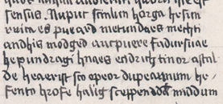
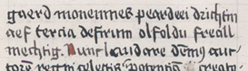

f.62r2, line 37

1[ Approx. 8 characters omitted ] Nupuc scinlun horga hesım|
ruica es[2] pueard 2metundaes mechti|
andhis modged auc3puere fadursuae|
hepundragi hnaes 4ecidrıch tin[3] or astnl|
de[4] 5heaerıst sco opeor dupeannum 6he ‑|
fento hrofe halig sceppend7da̽[5] middum|
f. 62v1, line 1

gaerd moneınnes peard8eei[6] drichtin|
aef tercia de9firum olfoldu freall|
mechtig·[7] [ Approx. 24 characters omitted ]
[1]Numerous differences in the interpretation of individual forms and characters can be found among modern transcriptions of this witness (see Humphreys and Ross 1975, 52; O’Donnell 1996b, 161; Cavill 2000, 512). For the most part these differences involve ambiguous forms, have an insignificant effect on our understanding of the text, and are not noted here (see Cavill 2000, 512-513, for a discussion).
[2]hesım|ruica es] Cavill 2000 reads hesun|ruica es (Humphreys and Ross 1975 hesun ruica es) for hesım|ruica es. As Cavill suggests the form is ambiguous. While the first minim is the scribe’s usual form <i> (see O’Donnell 1996b, 161), his <u> also rarely shows such a wide gap.
[3]drıch tin] Humphreys and Ross 1975 read dricht tin incorrectly. There is only one <t> in this form in the manuscript.
[4]astnl|de] Humphreys and Ross 1975 read astnide, apparently understanding the final stroke before the <d> as a long <i>. The normal form of long <i> in this manuscript is dotted and extends below the line (cf. filijs, f. 62v1, manuscript line 1). Cavill 2000 reads astal|de, although Brother Anthony’s <a> usually has a longer descender.
[5]da̽] There is a cross-like smudge above the <a>. Humphreys and Ross 1975 read ða. There is no <ð> in the poem in this manuscript.
[6]eei] Humphreys and Ross 1975 read eci. The second <e> is clear in the manuscript.
(Image © Bibliothèque Royale, Brussels. Reproduced with permission)
{kind=link}
{kind=link}